Yoru
БИОГРАФИЯ
Уроженец Японии Yoru способен создавать разрывы в самой реальности, чтобы незаметно пробираться на вражескую территорию. Сила и хитрость позволяют ему заставать врагов врасплох – они даже не успеют понять, откуда пришла смерть.
Ability
Q: ОШЕЛОМЛЕНИЕ - Нажмите кнопку умения, чтобы вырвать нестабильный фрагмент реальности. Нажмите кнопку ОГОНЬ, чтобы бросить фрагмент. При столкновении фрагмента с твердой поверхностью возникает ослепляющая вспышка.
E: НЕЗВАНЫЙ ГОСТЬ - Выбирает нить портала. Нажмите кнопку ОГОНЬ, чтобы послать портал вперед, или АЛЬТ. ОГОНЬ, чтобы разместить неподвижную нить. Телепортируйтесь по нити с помощью кнопки умения. Чтобы имитировать телепорт, нажмите кнопку ИСПОЛЬЗОВАТЬ.
C: ПРИМАНКА - Выбирает эхо, которое при активации создает зеркальное отражение Yoru. Нажмите кнопку ОГОНЬ, чтобы послать эхо вперед, или АЛЬТ. ОГОНЬ, чтобы разместить неподвижное эхо. Чтобы послать эхо вперед, нажмите кнопку ИСПОЛЬЗОВАТЬ.

X: ПРОСТРАНСТВЕННЫЙ ДРИФТ - Выбирает маску, которая позволяет смотреть сквозь измерения. Нажмите кнопку ОГОНЬ, чтобы переместиться в измерение, в котором Yoru неуязвим и невидим для врагов